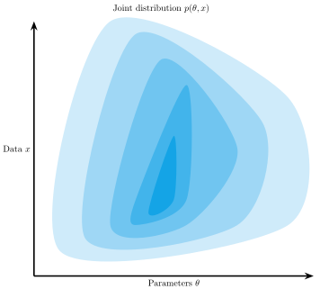
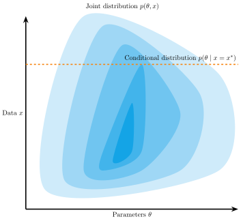

Introduction
Artificial Intelligence has two goals. First, AI is directed toward getting computers to be smart and do smart things so that human beings don’t have to do them. And second, AI […] is also directed at using computers to simulate human beings, so that we can find out how humans work.
Simon (1983, p. 27), van Rooij et al. (2024)
What are the values of the model parameters \(\theta\), given observed data \(x\)?
\[ \begin{aligned} p(\theta \mid x) & = \frac{p(\theta, x)}{p(x)} \\ & = \frac{p(\theta) \times p(x \mid \theta)}{\int p(\theta) \times p(x \mid \theta) d\theta} \end{aligned} \]
\[ p(x) = \int p(\theta) \times p(x \mid \theta) d\theta \]
Modern overview: Cranmer et al. (2020)
\[ \begin{aligned} p(\theta, x) & = p(\theta) p(x \mid \theta)\\ \end{aligned} \]
\[ \begin{aligned} p(\theta, x) & = p(\theta) p(x \mid \theta)\\ \end{aligned} \]
\[ \begin{aligned} \theta^{(s)} & \sim \text{Beta}(1, 1)\\ x^{(s)} &\sim \text{Binomial}(\theta^{(s)}, 10)\\ \\[0.1em] \theta \mid x^{\text{obs}}=7 & \approx \text{Samples from } \theta^{(s)} \text{ where } x^{(s)} = 7 \end{aligned} \]
\[ \rho(s(x), s(x^{\text{obs}})) \leq \epsilon \]
Pay the cost of inference upfront during training, receive benefits later
Using deep learning generative neural networks to make Bayesian inference.